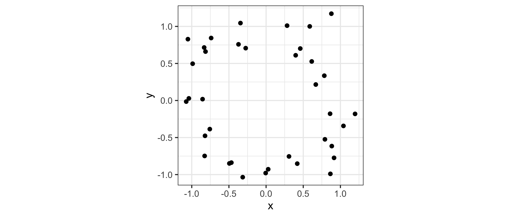
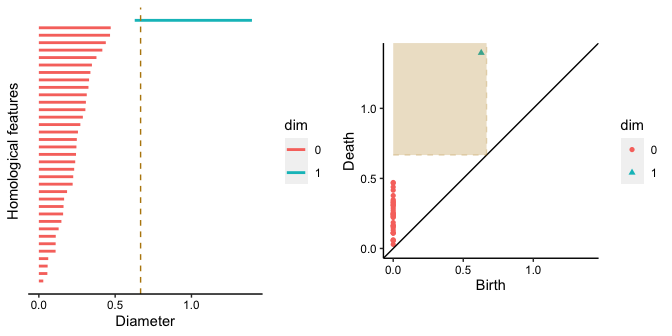

Overview
The ggtda package provides ggplot2 layers for the visualization of persistence data and other summary data arising from topological data analysis.
Installation
The development version of ggtda can be installed used the remotes package:
# install from GitHub
remotes::install_github("rrrlw/ggtda", vignettes = TRUE)For an introduction to ggtda functionality, read the vignettes:
# read vignettes
vignette(topic = "intro-ggtda", package = "ggtda")We aim to submit ggtda to CRAN soon.
Example
ggtda visualizes persistence data but also includes stat layers for common TDA constructions. This example illustrates them together. For some artificial data, generate a “noisy circle” and calculate its persistent homology (PH) using the ripserr package, which ports the ripser implementation into R:
# generate a noisy circle
n <- 36; sd <- .2
set.seed(0)
t <- stats::runif(n = n, min = 0, max = 2*pi)
d <- data.frame(
x = cos(t) + stats::rnorm(n = n, mean = 0, sd = sd),
y = sin(t) + stats::rnorm(n = n, mean = 0, sd = sd)
)
# compute the persistent homology
ph <- as.data.frame(ripserr::vietoris_rips(as.matrix(d), dim = 1))
print(head(ph, n = 12))
#> dimension birth death
#> 1 0 0 0.02903148
#> 2 0 0 0.05579919
#> 3 0 0 0.05754819
#> 4 0 0 0.06145429
#> 5 0 0 0.10973364
#> 6 0 0 0.11006440
#> 7 0 0 0.11076601
#> 8 0 0 0.12968679
#> 9 0 0 0.14783527
#> 10 0 0 0.15895889
#> 11 0 0 0.16171041
#> 12 0 0 0.16548606
ph <- transform(ph, dim = as.factor(dimension))Now pick an example proximity at which to recognize features in the persistence data. This choice corresponds to a specific Vietoris complex in the filtration underlying the PH calculation. (This is not a good way to identify features, since it ignores persistence entirely, but it intuitively links back to the geometric construction.)
# fix a proximity for a Vietoris complex
prox <- 2/3Geometrically, the Vietoris complex is constructed based on balls of fixed radius around the data points — in the 2-dimensional setting, disks (left). The simplicial complex itself consists of a simplex at each subset of points having diameter at most prox — that is, each pair of which are within prox of each other.
# attach *ggtda*
library(ggtda)
#> Loading required package: ggplot2
# visualize disks of fixed radii and the Vietoris complex for this proximity
p_d <- ggplot(d, aes(x = x, y = y)) +
theme_bw() +
coord_fixed() +
stat_disk(radius = prox/2, fill = "aquamarine3") +
geom_point()
p_sc <- ggplot(d, aes(x = x, y = y)) +
theme_bw() +
coord_fixed() +
stat_vietoris2(diameter = prox, fill = "darkgoldenrod") +
stat_vietoris1(diameter = prox, alpha = .25) +
stat_vietoris0()
# combine the plots
gridExtra::grid.arrange(
p_d, p_sc,
layout_matrix = matrix(c(1, 2), nrow = 1)
)
We can visualize the persistence data using a barcode (left) and a flat persistence diagram (right). In the barcode plot, the dashed line indicates the cutoff at the proximity prox (= 0.6666667); in the persistence diagram plot, the fundamental box contains the features that are detectable at this cutoff.
# visualize the persistence data, indicating cutoffs at this proximity
p_bc <- ggplot(ph,
aes(start = birth, end = death, colour = dim)) +
theme_barcode() +
geom_barcode(size = 1) +
labs(x = "Diameter", y = "Homological features") +
geom_vline(xintercept = prox, color = "darkgoldenrod", linetype = "dashed")
max_prox <- max(ph$death)
p_pd <- ggplot(ph) +
theme_persist() +
coord_fixed() +
stat_persistence(aes(start = birth, end = death, colour = dim, shape = dim)) +
geom_diagonal() +
labs(x = "Birth", y = "Death") +
lims(x = c(0, max_prox), y = c(0, max_prox)) +
geom_fundamental_box(t = prox,
color = "darkgoldenrod", fill = "darkgoldenrod",
linetype = "dashed")
# combine the plots
gridExtra::grid.arrange(
p_bc, p_pd,
layout_matrix = matrix(c(1, 2), nrow = 1)
)
The barcode shows red lines of varying persistence for the 0-dimensional features, i.e. the gaps between connected components, and one blue line for the 1-dimensional feature, i.e. the loop. These groups of lines do not overlap, which means that the loop exists only in the persistence domain where all the data points are part of the same connected component. Because our choice of prox is between the birth and death of the loop, the simplicial complex above recovers it.
The persistence diagram clearly shows that the loop persists for longer than any of the gaps. This is consistent with the gaps being artifacts of the sampling procedure while the loop being an intrinsic property of the underlying distribution.
Contribute
To contribute to ggtda, you can create issues for any bugs you find or any suggestions you have on the issues page.
If you have a feature in mind you think will be useful for others, you can also fork this repository and create a pull request.